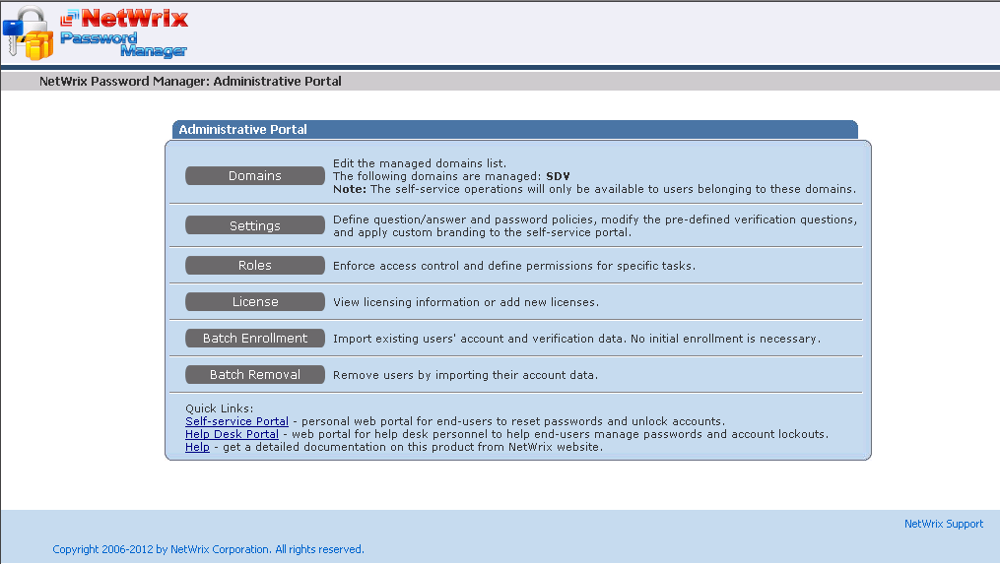
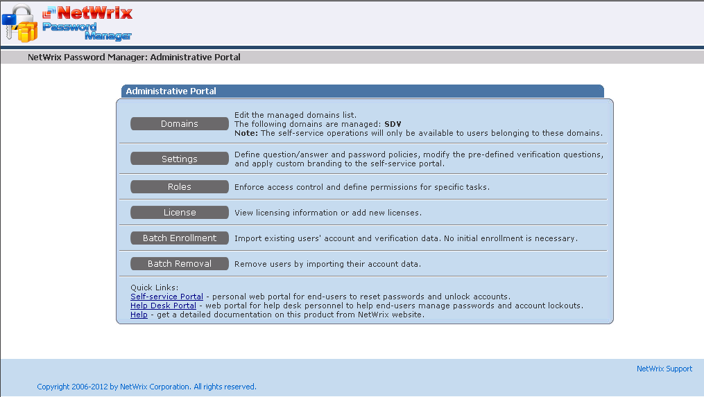
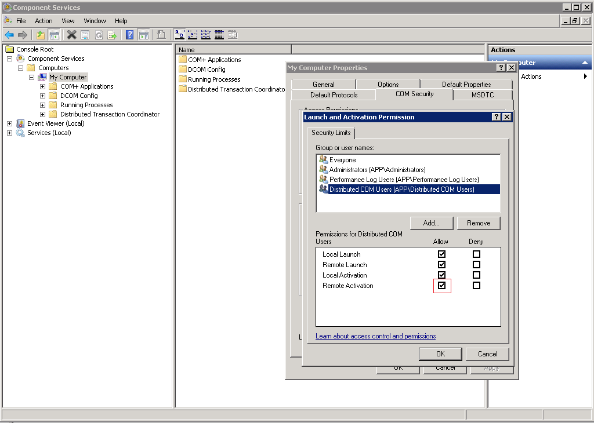
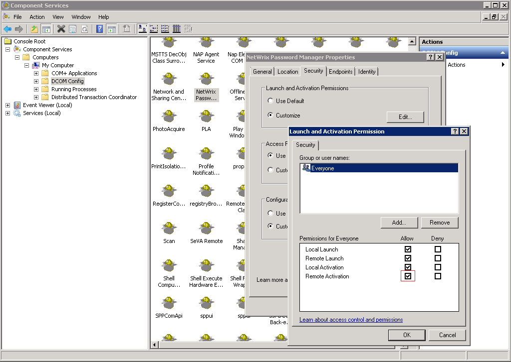

The Self-service portal returns an error or does not load at all.

However Admin and Helpdesk portals work.

Login to Admin or Helpdesk portal prompts for credentials, and those credentials are used to communicate with the back-end once authentication is complete. The Self-Service portal uses anonymous authentication and as a result - the account specified in IIS at Connect as

The issue occurs when there are some issues with permissions of this account.
Make sure that COM settings of the back-end server are correct:
However Admin and Helpdesk portals work.

Login to Admin or Helpdesk portal prompts for credentials, and those credentials are used to communicate with the back-end once authentication is complete. The Self-Service portal uses anonymous authentication and as a result - the account specified in IIS at Connect as
The issue occurs when there are some issues with permissions of this account.
Make sure that COM settings of the back-end server are correct:
- COM Security properties for My Computer node allow Remote activation

- Properties of Netwrix Password Manager COM object allow Remote activation
